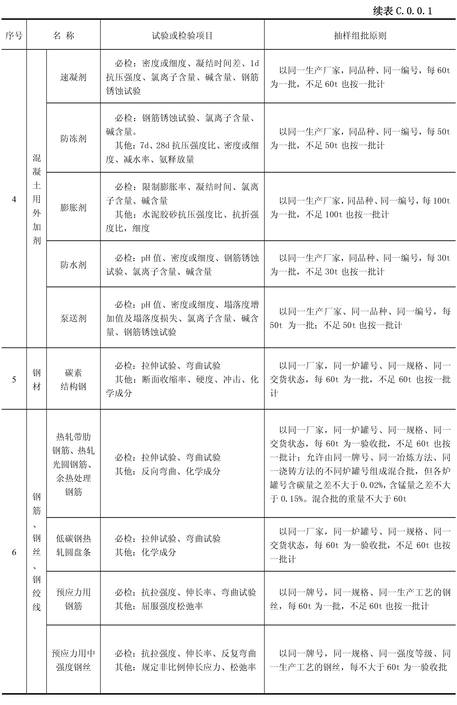

水运工程质量检验标准
JTS 257-2008
目次
关于发布《水运工程质量检验标准》（JTS 257-2008）的公告
制定说明
第 1 篇 水运工程质量检验统一规定
第 2 篇 通用工程质量检验
第 3 篇 通用工程质量检验
第 4 篇 码头与岸壁工程质量检验
第 5 篇 防波堤与护岸工程质量检验
附录A 水运工程施工现场质量管理检查记录
附录B 水运工程质量检验记录
附录C 主要材料试验和现场检验抽样组批原则及检验项目
附录D 水运工程混凝土结构实体质量验证性检测要求
附录E 疏浚与吹填工程质量检验的测量
附录F 通航水深和维护标准水深保证率计算
附录G 35kV 及以下电气设备交接试验要求
附录H 航道整治工程实船适航试验要求
附录J 航标助航效能测试要求
附录K 水运工程施工现场质量管理检查记录
附录L 本标准用词用语说明
附加说明
本标准各篇编写单位和主要起草人名单
附：条文说明
水运工程质量检验标准
JTS 257-2008
附录C 主要材料试验和现场检验抽样组批原则及检验项目
查看页面源码
附录C 主要材料试验和现场检验抽样组批原则及检验项目
附录C 主要材料试验和现场检验抽样组批原则及检验项目
C.0.0.1
水运工程主要材料试验和现场检验的抽样组批原则及检验内容宜按
表 C.0.0.1
确定。

\(\ \)